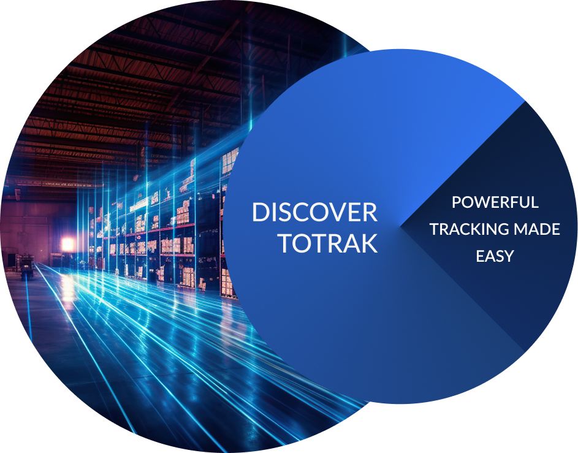

<style>
  #discover-page {
    text-align: center;
    user-select: none;
    padding-block: 3rem;
  }
  #discover-page--text {
    font-size: 1.5rem;
    line-height: 1.6em;
    color: var(--gray-7);
    max-width: 30em;
    margin-inline: auto;
    margin-block: 1.5em;
  }
  #discover-page--brochure-download {
    font-size: 1rem;
    background-color: #3276F9;
    color: white;
    text-decoration: none;
    padding: 0.5em 1em;
    border-radius: 0.25em;
  }

  @media (max-width: 768px) {
    #discover-page {
      padding-top: 2rem;
    }
    #discover-page > img {
      width: 80%;
      margin-inline: auto;
    }
    #discover-page--text {
      line-height: 1.3em;
      max-width: 30ch;
    }
  }
</style>


<section id="discover-page" class="page-section">

  

  <div id="discover-page--text">
    Our wide range of small IoT sensors connect directly to the cloud and provide tracking
    across land, sea, and air. Sensors can be placed in boxes, specialty packaging, pallets,
    containers, or trailers.
  </div>

  <a id="discover-page--brochure-download" href="totrak_brochure.pdf" download>
      Download our product brochure
  </a>

</section>
